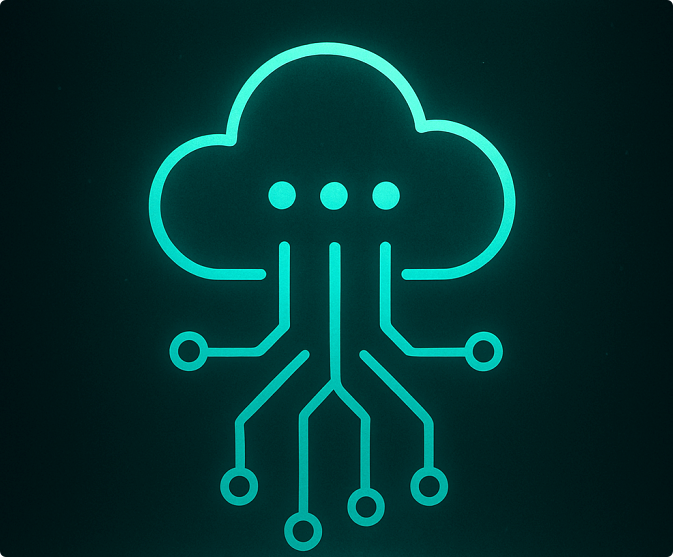

The Digital Infrastructure of BIOCERR is the invisible backbone that connects data, processes and territories in an integrated, regenerative way. It goes beyond technology alone — it’s an ecosystem of technical, ethical and territorial support that enables the BIO network to operate with transparency, intelligence and shared responsibility.
Instead of centralized platforms, we use distributed, interoperable and open-source architectures. This guarantees local autonomy, data sovereignty and active participation of the involved communities. Each node in the network contributes and benefits, strengthening collective resilience.
The infrastructure includes traceability modules, regenerative indicator management, real-time monitoring and integration with public and community systems. Everything is designed to be modular, adaptable and constantly evolving.
The artificial intelligence BIO acts as mediator of these digital interactions, translating complexity into clarity, suggesting paths, alerting about imbalances and supporting informed decisions based on the principles of regeneration.
Investing in digital infrastructure is to ensure that regeneration happens consistently, with monitoring and alignment between people, territories and technologies. It is the foundation for a new cycle of planetary care.

🧱 Blockchain
BIOBlock: Blockchain is a distributed ledger technology that functions as an immutable and transparent digital ledger. Instead of relying on a single central authority, information is stored on a decentralized network of computers (nodes). Each validated transaction or piece of data is grouped into a block, which contains a unique identifier (hash) and the cryptographic reference to the previous block, forming a tamper-proof chain.
Its main advantage lies in its security and reliability, as any attempted alteration is immediately detected by all network participants. Furthermore, Blockchain ensures transparency, traceability, and trust in digital processes, eliminating intermediaries and reducing costs.
In BIOCERR's digital infrastructure, Blockchain plays an essential role in:
- Ensuring the authenticity of production and logistics records.
- Protecting the intellectual property of innovation.
- Enabling real-time auditing of decentralized industrial processes.
- Integrating smart contracts that automate operating rules between the Parent Company and the MCEFPs.
Thus, Blockchain is not only a security technology, but also a pillar of digital governance, ensuring the integrity of the production network and trust among all stakeholders.
💡 How to interact with the graph:
• Use mouse wheel (or pinch) to zoom.
• Click nodes to view content.
• Drag the background to move the view.
• Drag nodes to reposition them; arrows follow.
• Double-click any empty area to re-center.
📊 Big Data
Live Stream: The term Big Data refers to the massive set of data continuously generated by people, companies, devices and digital systems. This data is characterized by the so-called “5 Vs”:
- Volume: The amount of data grows exponentially, requiring new forms of storage.
- Velocity: Capture and processing must occur in real time or near real time.
- Variety: Data can be structured (spreadsheets, relational databases) or unstructured (images, videos, texts, IoT sensors).
- Veracity: The quality and reliability of the information must be validated.
- Value: Transforming data into strategic knowledge is the ultimate goal.
In the context of Digital Infrastructure, Big Data is essential for analyzing consumption patterns, predicting system failures, monitoring production chains, and supporting evidence-based strategic decisions.
The most widely used technologies include:
- Hadoop and Spark for massive processing Distributed.
- Data Lakes for storing raw data on a large scale.
- Machine Learning applied to predict trends, detect anomalies, and optimize processes.
In the case of BIOCERR and SMPD, Big Data is essential for integrating information from MCEFPs, the parent company, and end users, enabling real-time monitoring and generating insights that strengthen the system's sustainability and efficiency. BIOCERR's Big Data module transforms massive volumes of information into regenerative intelligence. It collects, organizes, and interprets data from various sources—from sensors in MCEFPs to public systems, climate databases, community indicators, and real-time interactions with users.
💡 How to interact with the graph:
• Use mouse wheel (or pinch) to zoom.
• Click nodes to view content.
• Drag the background to move the view.
• Drag nodes to reposition them; arrows follow.
• Double-click any empty area to re-center.
🌐 IoT
BIO-IoT Network: At BIOCERR, the Internet of Things (IoT) is much more than connecting objects—it's a way to enhance the sensitivity of the territory. Each MCEFP functions as a living organism, equipped with sensors and devices that monitor variables in real time: temperature, bottling flow, water usage, reservoir levels, air quality, energy consumption, and even human interaction patterns.
The Internet of Things (IoT) represents the integration of physical devices into the digital environment, allowing sensors, machines, vehicles, and industrial systems to connect and exchange information in real time. This infrastructure expands operational intelligence, reduces human error, and enables automated decisions based on continuously collected data.
In the context of Industry 4.0, the IoT is essential for monitoring production chains, tracking assets, and efficiently managing energy resources. Each connected device acts as a smart node, sending data to analytical platforms that identify patterns, anomalies, and optimization opportunities.
Among its applications are:
- Smart Manufacturing: connected machines that autonomously adjust production parameters.
- Smart Cities: urban sensors that monitor traffic, street lighting, and air quality.
- Connected Health: wearable devices that collect vital information and integrate preventative diagnostics.
- Logistics: real-time cargo and fleet tracking, reducing losses and increasing predictability.
Along with Blockchain and Big Data, IoT forms the technological tripod of digital transformation, enabling decentralized, transparent, and highly scalable operations.
💡 How to interact with the graph:
• Use mouse wheel (or pinch) to zoom.
• Click nodes to view content.
• Drag the background to move the view.
• Drag nodes to reposition them; arrows follow.
• Double-click any empty area to re-center.
🧿 Digital Twins
Regenerative Simulators: At BIOCERR, Digital Twins are not just virtual copies of equipment or processes—they are living mirrors of regenerative territories. Each MCEFP and Parent Plant can have its own digital version that simulates, anticipates, and learns from the real behavior of physical systems.
This means we can predict failures, optimize routes, adapt production, and even test complex decisions without causing real impact. It's as if the factory itself could dream before acting.
BIOCERR's Digital Twins also integrate environmental, social, and operational data in real time. This allows us to understand how local decisions affect the environment, biodiversity, logistics flows, and the well-being of communities.
More than automation, Digital Twins enable anticipatory governance—decisions based on simulations, with human participation and artificial intelligence working together for the collective good.
In the BIOCERR vision, a Digital Twin is a sensitive and projective memory of the relationship between technology, nature, and care.
💡 How to interact with the graph:
• Use mouse wheel (or pinch) to zoom.
• Click nodes to view details.
• Drag the background to move the view.
• Drag nodes to reposition them; arrows follow.
• Double-click any empty area to re-center.
🛡️ Cybersecurity
BIO Shield – GAIA Cloud & Operations: Cybersecurity at BIOCERR is a living, distributed, auditable layer protecting people, data and processes across the MDPS: Central Industry, MEFFPs, digital twins and the GAIA cloud. We apply layered defense (Zero Trust), strong identity, end-to-end encryption, microsegmentation, continuous AI monitoring by BIO and incident response routines with immutable audit trails.
- Identity & Access: MFA, per-unit certificates (BIO PKI), role-based access control and rotating service keys.
- Perimeter & Transit: NGFWs, VPN (WireGuard/OpenVPN), TLS 1.3 and least-privilege policies between services.
- GAIA Cloud: encryption at rest (KMS), orchestrated policies, namespace isolation, image scanning and drift detection.
- Monitoring & SIEM: log collectors, event correlation (Wazuh/ELK), real-time alerts and response playbooks (TheHive/Cortex).
- Backup & Resilience: geo-replication, restoration tests, immutable logs (WORM) and blockchain-based incident recording.
- Compliance & Ethics: ISO 27001 / NIST guidelines, privacy by design and governance trails with BIO Council participation.
💡 How to interact with the graph:
• Use mouse wheel (or pinch) to zoom.
• Click nodes to view details.
• Drag the background to move the view.
• Drag nodes to reposition them; arrows follow.
• Double-click any empty area to re-center.